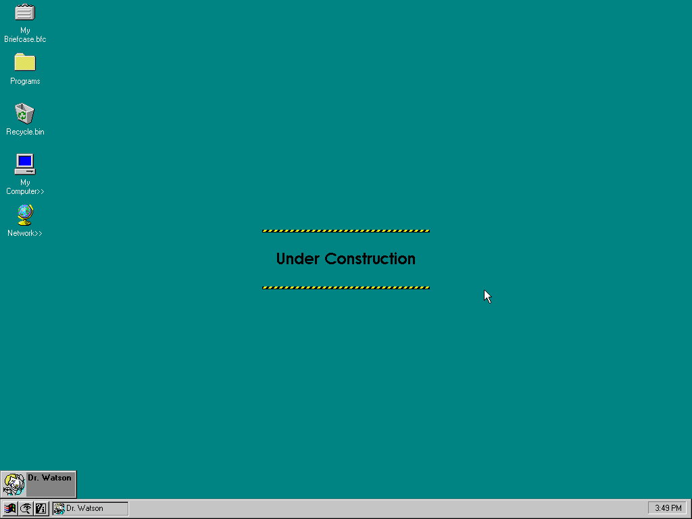

De Microsoft, flag logo designed by Jonathan D. Cowles and Jeff Boettcher - Logopedia, Dominio público, https://commons.wikimedia.org/w/index.php?curid=116018670

https://betawiki.net/index.php?curid=3859

https://betawiki.net/index.php?curid=4833
Description
These are the pre-release versions of Windows 95. Windows codename Cougar was supposed to be the succesor of Windows 3.11 but ended up being cancelled. It is unknown if Windows Cougar builds exist. Chicago is the codename for Windows 95.
Well-known builds
System requirements on Windows 95
Trivia
- In one build, "Start" on the start button was renamed to "Ship It!". A short documentary can be found here